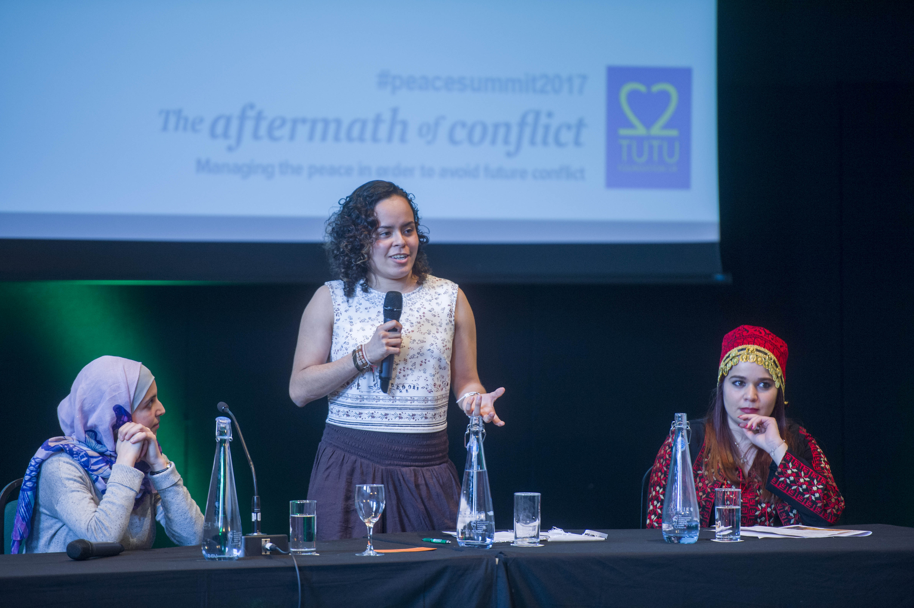

Maria del Mar
www.mariadelmar.com
CS Student
Where I study:
I am a senior at The University of Oklahoma
Relevant coursework:
You can see the courses I've taken here
Academic interests:
OS, AI and UI Design
Software Developer
Languages I speak:
C, C++, Java, Python, SQL, R
Dev tools:
Linux
Git
GitHub
GCP
Terminal
My personal projects
Personal website project
This website was my first attempt to learn web development. Take a look at the code here.
My Youtube Channel
Public Speaking
I love public speaking! Specifically, I love motivational speaking. I believe in motivating young people to pursue their dreams. I am proud of many appareances, such as:
2017 Tutu Foundation Peace Summit
I was a panelist at the 2017 Tutu Foundation Peace Summit, at Regents University London. I spoke about my experience as a young Colombian growing up in a country in war. I was given the opportunity to open up about the roots of the armed conflict and the importance of the younger generation in shaping a Peaceful nation. It was truly, an eye-opening experience that I will never forget!
2017 Skoll Foundation Education Forum
I was a panelist at the 2017 Skoll Forum of Education, University of Oxford. On this opportunity I had the chance to talk to academics and educators on what can shape a truly tranformational educational experience, from a student's perspective. I was by far the person with the lowest education level (Most people had PhDs!), yet it seemed like everyone in the room loved my intervention. I had an amazing time and decided to commit part of my attention to helping young people educate themselves and find opportunities through education!
The long story
It's been quite a journey! I am originally from Cali, Colombia where I grew up. However, I left when I was 17 years old to go to Flekke, Norway where I finished high school with 200 students from over 90 different countries at UWC Red Cross Nordic. During my 2 years in Norway I had the chance to expand my horizons and develop social skills, including a passion of mine that is public speaking and peace development research. Upon graduation, I was given the opportunity to continue my education at The University of Oklahoma with a Shelby Davis Foundation scholarship, where I currently attend. I am majoring in computer science with a minor in philosophy and am eager to learn new ideas!
Contact me
Interested in working with me?
Let's talk! Feel free to reach out to me on LinkedIn or send me an email